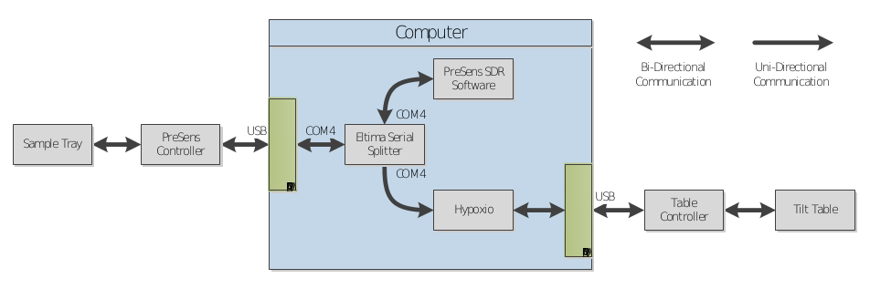
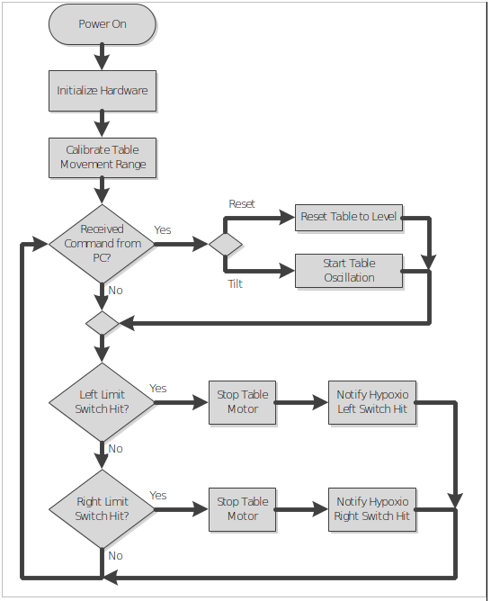

A Windows desktop application for controlling Hypoxio.
The system is designed to physically tilt a sample tray based on the O2 values read from the PreSens SensorDish hardware. Using these values in real time and through the use of the Hypoxio software the amount of tilt, the speed of the tilt and the number of tilt oscillations can be specified.
The PreSens Controller as well as the Table Controller each connects to the computer via USB. When plugged in, Windows will load the appropriate drivers which will allow software to access each of the devices. Unlike the Table Controller, where a standard USB driver is loaded, the PreSens Controller will be installed and presented to the operating system as a numbered COM Port designation (ie. COM4). Under normal circumstances, Windows will only allow a single program at a time to access a specific COM Port. In a typical PreSens system setup, the PreSens SDR software would use the associated COM Port to send commands to as well as receive data from the hardware. Due to the fact that the SDR software has no provision to be able to export its data in real time, the only way to see the data that is being returned by the hardware is to tap into the data feed that exists between the COM Port and the SDR software itself.
The Eltima Serial Splitter software provides the ability to share an existing COM Port between multiple programs. When data is received from the PreSens Controller it is then sent to each program that has connected to that shared port. In this case both the PreSens SDR software as well as the Hypoxio table control software will both receive the exact same data. The SDR software will still function as in the previously mentioned typical setup but now the Hypoxio table control software will be able to read the PreSens Controller data in real time and control the Tilt Table accordingly.
The Hypoxio table control software receives and processes the data from the PreSens hardware and allows you to control the movement characteristics of the Tilt Table. Once the software is configured to connect to the PreSens shared COM Port the settings can be adjusted to specify when the rocking should start and stop as well as how fast, how far and how many times the table should rock back and forth.
The only communication configuration required is to tell Hypoxio from which COM Port the PreSens data will be available. These settings are accessible from the main window through the Splitter Com Settings button. The COM Port value should be set to the shared port that was configured in the Eltima Serial Splitter software. The remainder of the settings should be set to match the configuration that is used in the PreSens SDR software.
Tray Configuration is the section which specifies when rocking should start and stop. The data returned from the PreSens hardware represents the O2 levels in each of the wells of the Sample Tray with a number between 0 and 65535. When a data sample is returned from the Sample Tray, Hypoxio will extract each of these values based on which wells are selected in the tray diagram and average those values together to give the Current Average Value. As the O2 levels of the samples fall the values returned by the PreSens hardware will climb and as the levels rise the values will fall. Once the dropping O2 levels cause the averaged value to rise above the Start value, Hypoxio will command the Tilt Table to start rocking back and forth based on the settings in the Tilt Configuration section of the software. The software will then continue to monitor the average value and issue tilt commands to the table until the average value falls below the Stop value. At this point in time, Hypoxio will cease issuing tilt commands to the table. This functionality will repeat itself as necessary during the time period specified in the Duration Timer section of the software.
When Hypoxio issues tilt commands to the Tilt Table, the command includes parameters which tell the table how to move. This section allows for the modification of these parameters so that this movement can be customized to the particular experiment being conducted. Tilt Speed relates to how fast the table moves from side to side and is given in a percentage of the system’s maximum speed. Tilt Amount indicates how far the table should move from side to side and is given in a percentage of the system’s maximum movement range. Tilt Cycles is the number of oscillations back and forth that should be completed for this particular command before stopping. The current settings can be tested by using the Test Tilt Settings button.
The Duration Timer outlines the length of time that Hypoxio will monitor for the incoming data from the PreSens hardware. During this period Hypoxio will issue the appropriate tilt commands to the Tilt Table depending on the value of the Current Average Value and given start and stop values. The timer is controlled by the Start and Stop buttons at the bottom of the window.
The command buttons at the bottom of the window control the actions of Hypoxio. Start and Stop will begin and end the monitoring process for data which is being received from the PreSens hardware. When started, Hypoxio will listen for, decode and transmit tilt commands to the Tilt Table hardware as well as begin the countdown of the duration timer. The monitoring process can be stopped at any time by using the Stop button but the system will also stop automatically when the duration timer runs out. The Stop Rocking button can be used to tell the Tilt Table to cease its current rocking motion and return to a level position. Finally, as described above, the Splitter Com Settings button is used to configure the parameters needed for Hypoxio to properly connect to the Eltima Serial Splitter software to receive the data from the PreSens hardware.
The command buttons at the bottom of the window control the actions of Hypoxio. Start and Stop will begin and end the monitoring process for data which is being received from the PreSens hardware. When started, Hypoxio will listen for, decode and transmit tilt commands to the Tilt Table hardware as well as begin the countdown of the duration timer. The monitoring process can be stopped at any time by using the Stop button but the system will also stop automatically when the duration timer runs out. The Stop Rocking button can be used to tell the Tilt Table to cease its current rocking motion and return to a level position. Finally, as described above, the Splitter Com Settings button is used to configure the parameters needed for Hypoxio to properly connect to the Eltima Serial Splitter software to receive the data from the PreSens hardware.
The Tilt Table Controller is a microcontroller based, USB controlled system which will control the Tilt Table depending on the commands received from the Hypoxio software. The Controller is connected to the Tilt Table through a multi-conductor cable which allows it to control the motor but also determine if the table has tilted too far one way or the other and come in contact with one of the two chassis-mounted limit switches. The driving motor is a geared down 416 oz-in bipolar stepper motor with a gear ratio of 26.851:1 and is coupled directly to the tilt platform.
The source code for the Tilt Controller is available on GitHub. It was written under the Microchip MPLABX development environment (version 4.15) using the Microchip XC16 C compiler (version 1.33).
